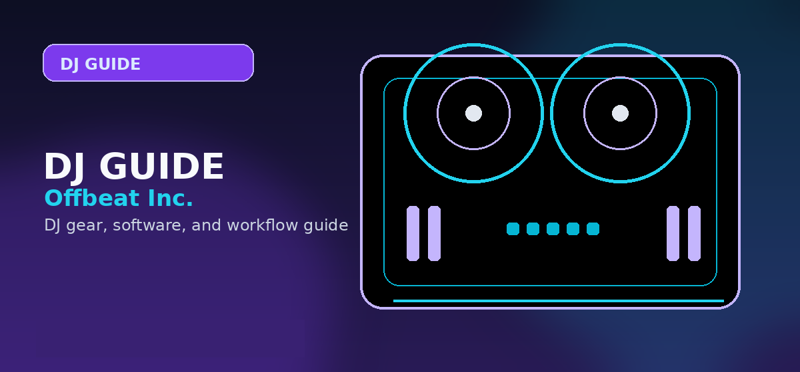

Best Standalone DJ Systems
A high-ticket standalone DJ system guide comparing XDJ-AZ, Denon Prime 4+, OMNIS-DUO, Mixstream Pro Go, SC Live, and buyer workflows without a laptop.

Disclosure: This page uses affiliate links. We may earn a commission at no extra cost to you. Full disclosure →
A high-ticket standalone DJ system guide comparing XDJ-AZ, Denon Prime 4+, OMNIS-DUO, Mixstream Pro Go, SC Live, and buyer workflows without a laptop.

Best standalone DJ systems: quick picks
Standalone systems are expensive because they replace the laptop/controller split with screens, internal processing, USB/SD/library workflows, streaming support, and professional I/O. The buyer is not just buying a controller; they are buying a performance environment.
AlphaTheta XDJ-AZ
The XDJ-AZ is the stronger recommendation for DJs who want a professional AlphaTheta layout, rekordbox continuity, club-style workflow, four-channel capability, and current Apple Music / Serato support context. It is the natural upgrade path for serious rekordbox users and mobile DJs who want to practice on a system that feels closer to the club standard.
Confirm today’s price, stock, and return policy before buying.
Denon DJ Prime 4+
The Prime 4+ is the strongest recommendation for feature-maximizing standalone buyers who want Engine DJ flexibility, large screen workflow, streaming accessibility, standalone stem separation context, and a mobile/event-friendly feature set. It is less club-standard than the AlphaTheta path but often more aggressive on features.
Confirm today’s price, stock, and return policy before buying.
AlphaTheta OMNIS-DUO
The OMNIS-DUO is for mobile, lifestyle, and compact standalone use rather than traditional club replacement. It makes sense when portability, battery-friendly workflow, and modern streaming support matter more than full flagship scale.
Confirm today’s price, stock, and return policy before buying.
Standalone comparison table
| System | Best for | Software/library path | Main risk |
|---|---|---|---|
| XDJ-AZ | Club-style rekordbox and AlphaTheta users | rekordbox, USB, Serato support context | High price and large physical footprint |
| Prime 4+ | Mobile/event DJs who want maximum standalone features | Engine DJ ecosystem and streaming-heavy workflows | Less universal booth familiarity than Pioneer/AlphaTheta |
| OMNIS-DUO | Portable premium standalone practice and small events | rekordbox and modern streaming workflow | Not a full club-replacement layout |
| Mixstream Pro Go | Casual standalone, battery-powered, streaming-friendly use | Engine DJ | Not the best choice for pro outputs or club feel |
| SC Live 4 | Denon standalone with built-in speakers and four-deck feel | Engine DJ | Speakers are convenient, not a substitute for real PA monitoring |
When standalone is worth the money
Standalone is worth it when the buyer is already committed to DJing and wants faster setup, less computer dependency, a more professional booth layout, and direct USB/streaming/library control. It is not the best first purchase for a casual beginner who has not learned basic phrasing, beatmatching, gain staging, or set preparation.
Buy standalone if
- You play paid mobile events and want fast setup.
- You are preparing for club-style hardware.
- You want less laptop failure risk.
- You want a large integrated screen and pro outputs.
Skip standalone if
- You are still testing whether DJing will stick.
- You need the cheapest route into practice.
- Your music library is not organized yet.
- You rely on software-only features that the standalone unit cannot run.
Standalone system buyer scenarios
For home practice, a compact standalone system is attractive because it removes the laptop and keeps the setup ready at all times. For mobile events, a larger standalone system can simplify setup, reduce cable clutter, and give you a reliable all-in-one centerpiece. For club preparation, the strongest reason to buy standalone is layout familiarity with CDJ/XDJ-style performance.
Compare systems by workflow rather than screen size alone. Check whether the system supports your preferred library prep software, whether it can analyze tracks on-device, whether streaming services work in the mode you plan to use, and whether the outputs match the speakers or PA systems you connect to. Also check whether recording is supported when using local files versus streaming tracks.
A standalone system is worth the money when it replaces several weaker pieces of gear and makes you practice more often. It is not worth it if you still need to bring a laptop for every real set because your library, controller habits, or software features do not transfer cleanly.
Standalone system readiness checklist
Standalone DJ systems are worth paying for when the screen, outputs, library workflow, and setup speed replace a laptop rather than simply duplicating it.
| Check | Why it matters |
|---|---|
| Library export workflow | Your playlists, cue points, grids, and analysis need to transfer reliably before the gig. |
| Booth and master outputs | Mobile and venue setups often need XLR, RCA, booth control, and mic handling at the same time. |
| Screen workflow | The screen should be readable under lights and fast enough for library search without a laptop. |
| Backup plan | Carry duplicate USB/SD media and know how to reboot without losing the set flow. |
Buying advice and compatibility checks
Use this section to sanity-check the standalone DJ system against your actual setup before comparing prices.
Best fit
DJs who want laptop-free USB, streaming, or library workflows with screens and professional outputs in one unit.
Skip if
Beginners who have not learned library prep or anyone who mainly plays from a laptop controller at home.
Compatibility checks
Check rekordbox/Engine library path, streaming subscriptions, file-format support, USB preparation, and whether DVS or software mode matters.
2026 update
StreamingDirectPlay, cloud libraries, and larger touchscreens make standalone units more flexible, but subscriptions and prep habits still decide usability.
Price caveat
Standalone systems are expensive; compare the full cost against a controller plus laptop you already own.
Recommendation logic
Choose the ecosystem you trust for preparation and updates, not only the largest screen or newest headline feature.
| Buying check | What to verify | Why it matters |
|---|---|---|
| Setup fit | Inputs, outputs, operating system, software tier, and accessories | Prevents buying gear that looks right but fails in the actual rig. |
| Upgrade path | Whether the product still makes sense after six to twelve months | Reduces duplicate purchases and rushed upgrades. |
| Total cost | Required cables, cases, subscriptions, replacement parts, and backups | The lowest listing price is often not the true working setup cost. |
Official spec and support links
Check current specs, supported software, firmware, and accessory requirements at the source before buying.
Frequently Asked Questions
What is the best standalone DJ system?
For club-style rekordbox users, the XDJ-AZ is the stronger path. For feature-dense mobile/event use, the Denon DJ Prime 4+ is a serious alternative.
Should beginners buy standalone DJ systems?
Usually no. Beginners should start with software and a controller unless they are certain they want a high-ticket standalone rig.
Is standalone better than a laptop controller?
Standalone is cleaner and more self-contained, but laptop controllers are cheaper, easier to update, and often better for software-heavy workflows.
What should I check before buying this DJ controller?
Confirm software compatibility, audio outputs, headphone cueing, driver support, and whether the controller fits your real practice or gig setup.
Is this controller category good for beginners?
It can be, but beginners should prioritize reliable software support, simple routing, and controls that teach transferable DJ habits before paying for advanced performance features.